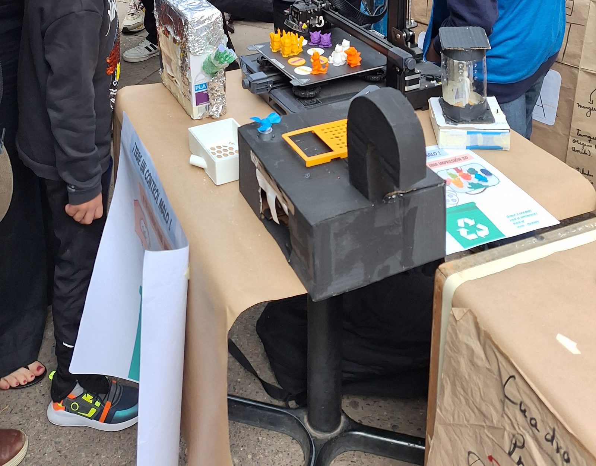
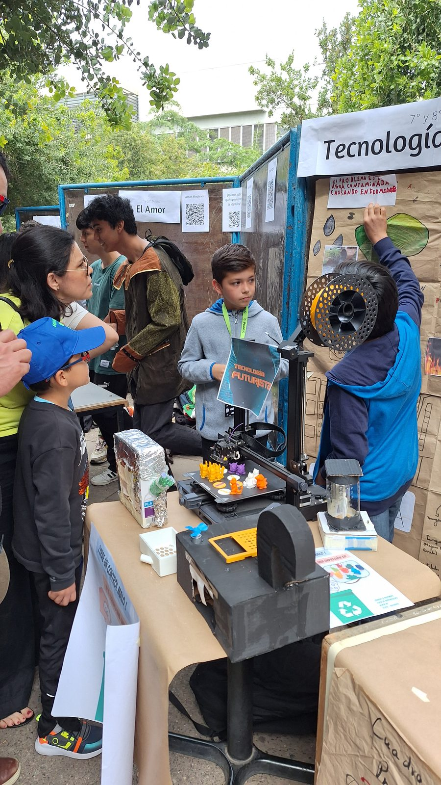
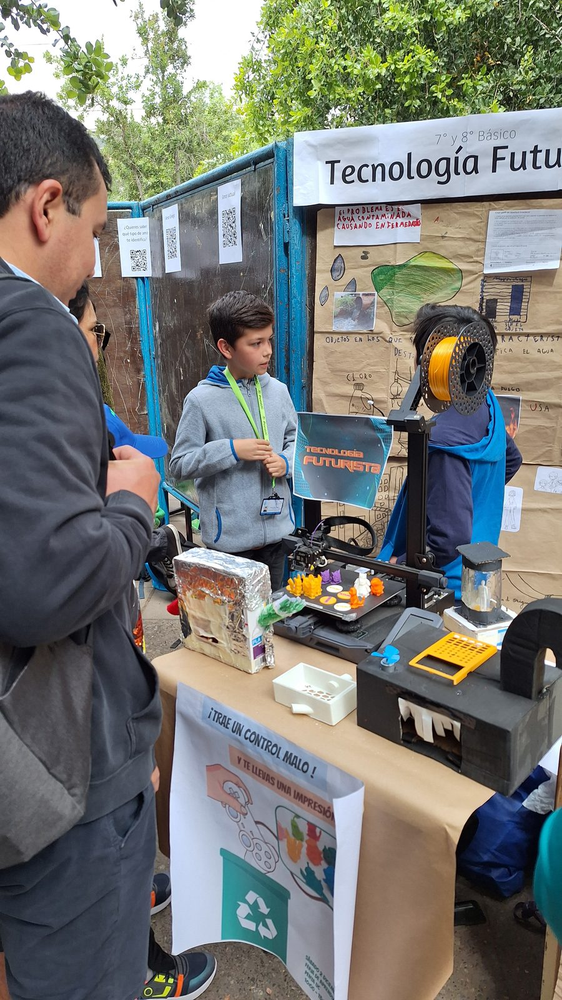
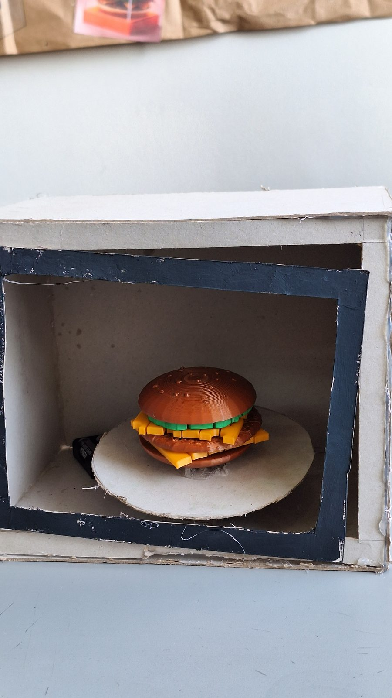
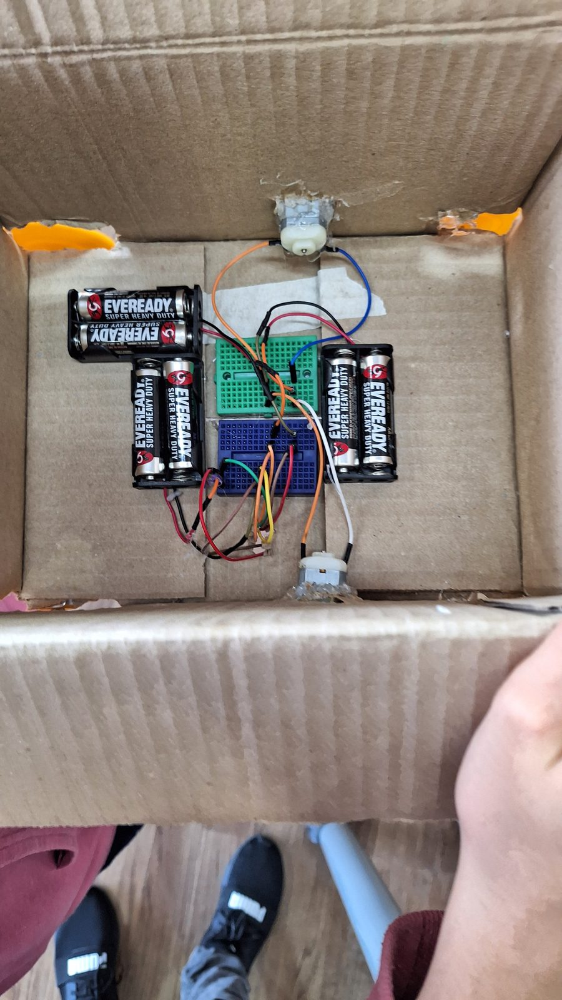
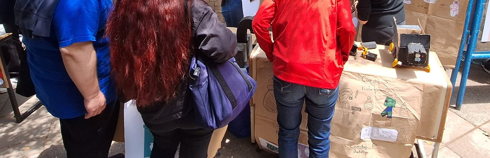

Tecnología Futurista
Diseñando la tecnología de tu idea de futuro con impresión 3D
Imaginar cómo será la vida en el año 2100 y construir, con impresión 3D y electrónica básica, la tecnología que esa humanidad necesitaría para resolver sus problemas cotidianos.

El curso parte de una pregunta que a los estudiantes de 7º y 8º les resulta irresistible: ¿cómo será vivir en el año 2100? En vez de responderla con una redacción, la respondimos construyendo. Cada equipo definió un futuro posible para la humanidad, identificó un problema cotidiano dentro de ese futuro y diseñó el objeto que lo resolvería.
La columna vertebral es el Design Thinking en sus cinco etapas, pero aterrizado a herramientas que un estudiante de 13 años puede dominar en un semestre: diseño especulativo y referentes de ciencia ficción para empatizar, árbol de problemas para definir, Tinkercad y electrónica básica para idear, impresión 3D y materiales reutilizados para prototipar, y una feria de aprendizajes abierta al público para testear.
El resultado fue un conjunto de objetos que funciona como un kit de lo que existiría en el futuro: prototipos que encienden luces, activan motores e incorporan piezas impresas en 3D diseñadas por los propios estudiantes.
Curso de creación propia
Diseñé la propuesta educativa completa: el concepto, los objetivos, la secuencia de doce sesiones, los instrumentos de evaluación y el material de clase. Fue mi primer curso en PENTA UC.
Temario
- 01Presentación y primer prototipadoMetodología del curso, formación de equipos y ejercicio de prototipado rápido como rompehielos.
- 02Futuros posiblesReferentes de cine y literatura, collage del futuro y primera demostración de impresión 3D.
- 03Personajes y espacios del futuroMapa de empatía por equipos y primeros modelados en Tinkercad.
- 04Definir el problemaÁrbol de problemas e impresión 3D de los avances de la sesión anterior.
- 05Idear solucionesLluvia de ideas en equipo y primeros circuitos: encender un LED.
- 06Evaluación intermediaModelo 3D individual de la solución ideada, exportado a STL y preparado en Cura.
- 07Primer prototipoPrototipado con materiales reutilizados junto a las piezas ya impresas.
- 08Dominar la impresión 3DParámetros de impresión y comprobación de los circuitos del proyecto.
- 09Presentación de avancesExposición por equipos y retroalimentación entre pares.
- 10Revisión con experto invitadoUn profesional externo revisa los prototipos y conversa con los equipos.
- 11Preparación de la feriaBitácora final del proyecto y prototipado definitivo.
- 12Feria de aprendizajesEvaluación final: exposición abierta de los prototipos terminados.
Registro





